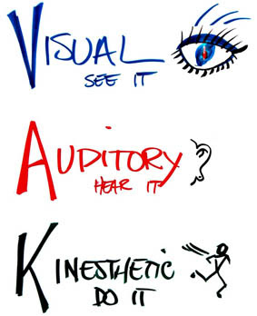

Los seres humanos tienen diferentes formas de percibir la información, es desde estos distintos canales de percepción por los que adquiere conocimientos. El modelo VAK identifica tres canales de percepción: visual, auditivo y kinestésico, el mismo que posteriormente dará lugar al llamado VARK al incluir un estilo de aprendizaje de lecto escritura (Reyes, 2017).
Este modelo se basa en las modalidades sensoriales preferidas por los estudiantes, ya que afirma que aprenden mejor viendo y leyendo, escuchando y hablando, o tocando y haciendo respectivamente (Lilienfeld, 2009).